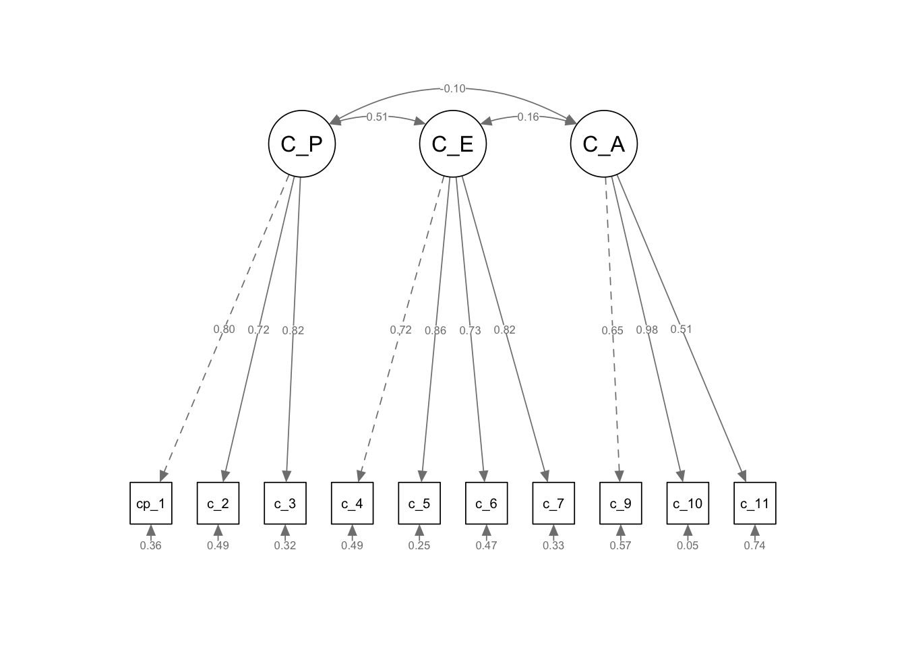

| Male | Female | p | test | |
|---|---|---|---|---|
| n | 50 | 9 | ||
| age (mean (SD)) | 56.78 (11.50) | 46.00 (11.79) | 0.013 |
Climate Scientists Survey 2025
Background: Time 1 - Surveys and other questions
The data for Time 1 was collected from individuals identified as climate scientists via an online survey (via email invitation) in 2017. It was presented in an Honours thesis by Jude Fox the same year but has not yet been published.
This dataset included some demographic questions (age, gender, country of residence, country of work, nature of work, number of years working, and highest level of education), a question about whether the participants agreed with the IPCC’s findings that anthropogenic climate change is occurring and is a grave threat to the planet (yes, no, or “it’s complicated”), and a set of surveys addressing both qualitative and quantitative questions.
Included surveys were the DASS-21 (Depression, Anxiety and Stress Scale, short form; Henry & Crawford, 2005), the CBI (Copenhagen Burnout Inventory; Borritz & Kristensen, 2004), and two single-item questions about hope for the future and worry about the future, followed by free-text response boxes.
Descriptive stats - Time 1 (2017)
I first set out to reproduce the results in the thesis. After removing the participant who was marked as having bad data, and the first participant in the dataset who appears to have been piloting the survey, I was able to fairly closely reproduce the results reported in the thesis, with a few exceptions.
From the thesis: “Fifty-nine climate change scientists volunteered to participate in response to an emailed invitation. The 9 women were aged from 28 to 62 years (M = 46.00, SD = 11.79), and the 50 men from 28 to 80 years (M = 56.78, SD = 11.50).”
| level | Overall | |
|---|---|---|
| n | 59 | |
| age (mean (SD)) | 55.14 (12.09) | |
| years_working (mean (SD)) | 29.49 (12.34) | |
| cbi_personal (mean (SD)) | 34.11 (16.96) | |
| cbi_work (mean (SD)) | 29.60 (16.26) | |
| hopeful_future_rating (mean (SD)) | 55.10 (21.45) | |
| dass_total (mean (SD)) | 8.37 (6.09) | |
| gender (%) | Male | 50 (84.7) |
| Female | 9 (15.3) | |
| highest_ed (%) | Doctoral Degree | 55 (93.2) |
| Masters Degree | 3 ( 5.1) | |
| Other | 1 ( 1.7) |
Reliability stats, Time 1 (2017)
The thesis reports reliability stats for the DASS subscales, although it goes on to use the overall mean rather than any of the subscales, under the label of “mental health”.
| raw_alpha | std.alpha | G6(smc) | average_r | S/N | ase | mean | sd | median_r | |
|---|---|---|---|---|---|---|---|---|---|
| Depression | 0.78 | 0.79 | 0.79 | 0.35 | 3.73 | 0.04 | 0.36 | 0.37 | 0.35 |
| Anxiety | 0.65 | 0.69 | 0.72 | 0.24 | 2.25 | 0.07 | 0.15 | 0.21 | 0.25 |
| Stress | 0.82 | 0.83 | 0.83 | 0.41 | 4.84 | 0.03 | 0.68 | 0.44 | 0.42 |
These reproduce the figures reported in the thesis:
“This scale has good internal reliability with Cronbach’s alphas of .88 for the depression subscale, .82 for anxiety, and .90 for stress (Henry & Crawford, 2005). Respective Cronbach’s alphas for this sample were .78, .65, and .82.”
Note that these were calculated using the psych package in R
Reliability for the Copenhagen Burnout Inventory was also closely reproduced.
| raw_alpha | std.alpha | G6(smc) | average_r | S/N | ase | mean | sd | median_r | |
|---|---|---|---|---|---|---|---|---|---|
| Personal burnout | 0.85 | 0.84 | 0.85 | 0.47 | 5.42 | 0.03 | 34.11 | 16.96 | 0.49 |
| Work burnout | 0.86 | 0.86 | 0.87 | 0.47 | 6.28 | 0.03 | 29.60 | 16.26 | 0.46 |
From the thesis:
“The Copenhagen Burnout Inventory (Borritz & Kristensen, 2004) measures personal-burnout (\(\alpha = .87\)) and work-burnout (\(\alpha = .87\)). Respective Cronbach’s alphas for this sample were .85 and .86.”
Part 2: Data collected in 2025
In January 2025 we set out to collect some new data from climate scientists, in the light of Trump’s re-election in the US and renewed fears about policy on climate. On 3rd March 2025, we emailed a list of 7,446 climate scientists from a list compiled from various sources (PubMed, IPCC, etc.). Of these, 7 messages failed and 1492 messages bounced, according to Qualtrics. This means that 5,947 emails were delivered. From these, some respondents emailed us with further suggestions, and we sent 12 emails from these contributed addresses, which resulted in 4 surveys started and 3 finished. From the original list, 544 were started and 402 finished. We compiled a list based on emails that had not “hard” bounced and had not resulted in a survey completion; on 5th June 2025 we sent out a reminder email to this list (5,746 emails), of which 161 bounced. From this email, 236 surveys were started and 159 finished. In total, we now have 567 recorded responses to the survey, a response rate of just under 10 percent.
The survey contained similar demographic questions to the previous survey, and also included a question about the nature of work the respondents were doing.
Scales used were, as before, the Copenhagen Burnout Inventory (CBI; range of 0 to 100; Kristensen et al., 2005), which has personal and work subscales, and the DASS-21 (range of 0 to 7 per scale; Lovibond & Lovibond, 1995), as well as the Hogg Eco-Anxiety Scale (range 0 to 39; Hogg et al., 2021), the Short Warwick-Edinburgh Mental Well-being Scale (SWEMWBS), the SPOS (Survey of Perceived Organisational Support; range of 0 to 48; Eisenberger et al., 1986), a scale of Coping (Jovarauskaite & Bohm, 2021) with subscales of problem-focused coping (range 3 to 18), emotion-focused coping (range 4 to 24), and avoidance (range 4 to 24), and the WAMI (Work as Meaning Inventory; Steger et al., 2012), as well as some open-ended questions following two rating scales. Participants were asked to rate how hopeful they felt about the future (on a scale of 1 to 100, from “absolutely no hope” to “extremely hopeful”), followed by three open-ended questions: Why do you feel this way? What makes you hopeful? What makes you feel not hopeful, or affects your ability to feel hopeful?. Finally they were asked to rate how worried they felt about the future, followed by three similar open-ended questions.
Part 2 - descriptive statistics
| Male | Female | Other | Prefer not to say | p | test | |
|---|---|---|---|---|---|---|
| n | 157 | 250 | 10 | 9 | ||
| age (mean (SD)) | 49.32 (10.32) | 57.06 (12.62) | 53.33 (14.03) | 55.29 (9.05) | <0.001 |
It looks as if this sample had more women than men (different to Time 1), and the women were significantly older.
| level | Overall | |
|---|---|---|
| n | 427 | |
| age (mean (SD)) | 54.05 (12.32) | |
| cbi_personal (mean (SD)) | 41.68 (21.93) | |
| cbi_work (mean (SD)) | 38.53 (21.59) | |
| hope_1 (mean (SD)) | 49.84 (23.31) | |
| dass_depression (mean (SD)) | 3.42 (3.64) | |
| dass_anxiety (mean (SD)) | 2.13 (2.79) | |
| dass_stress (mean (SD)) | 5.49 (4.16) | |
| hogg_total_score (mean (SD)) | 9.28 (8.04) | |
| coping_PF_score (mean (SD)) | 4.44 (1.09) | |
| coping_EF_score (mean (SD)) | 3.16 (1.23) | |
| coping_avoidance_score (mean (SD)) | 1.91 (0.84) | |
| SPOS_score (mean (SD)) | 4.05 (1.66) | |
| SWEMWS_score (mean (SD)) | 3.47 (0.62) | |
| WAMI_score (mean (SD)) | 42.41 (6.02) | |
| gender (%) | Male | 157 (36.9) |
| Female | 250 (58.7) | |
| Other | 10 ( 2.3) | |
| Prefer not to say | 9 ( 2.1) | |
| education (%) | Other | 5 ( 1.2) |
| Bachelor degree | 1 ( 0.2) | |
| Masters Degree | 10 ( 2.3) | |
| Doctoral Degree | 410 (96.2) |
Reliability stats, time 2
Let’s have a look at reliability stats for all the scales.
DASS subscales
| raw_alpha | std.alpha | G6(smc) | average_r | S/N | ase | mean | sd | median_r | |
|---|---|---|---|---|---|---|---|---|---|
| Depression | 0.89 | 0.89 | 0.88 | 0.55 | 8.41 | 0.01 | 0.49 | 0.52 | 0.54 |
| Anxiety | 0.79 | 0.80 | 0.79 | 0.36 | 4.01 | 0.02 | 0.30 | 0.40 | 0.36 |
| Stress | 0.88 | 0.89 | 0.88 | 0.53 | 7.79 | 0.01 | 0.78 | 0.60 | 0.52 |
Copenhagen Burnout Inventory (CBI) subscales
| raw_alpha | std.alpha | G6(smc) | average_r | S/N | ase | mean | sd | median_r | |
|---|---|---|---|---|---|---|---|---|---|
| Personal burnout | 0.91 | 0.91 | 0.91 | 0.63 | 10.08 | 0.01 | 41.68 | 21.96 | 0.63 |
| Work burnout | 0.89 | 0.89 | 0.89 | 0.53 | 7.90 | 0.01 | 38.54 | 21.61 | 0.58 |
Hogg Eco-Anxiety Scale reliability
| raw_alpha | std.alpha | G6(smc) | average_r | S/N | ase | mean | sd | median_r | |
|---|---|---|---|---|---|---|---|---|---|
| Total | 0.92 | 0.92 | 0.94 | 0.47 | 11.51 | 0.01 | 0.72 | 0.62 | 0.44 |
| Affective | 0.89 | 0.89 | 0.86 | 0.66 | 7.85 | 0.01 | 0.68 | 0.74 | 0.64 |
| Rumination | 0.88 | 0.88 | 0.84 | 0.71 | 7.51 | 0.01 | 0.76 | 0.81 | 0.72 |
| Behavioural | 0.83 | 0.83 | 0.76 | 0.62 | 4.86 | 0.01 | 0.52 | 0.68 | 0.62 |
| PI | 0.89 | 0.89 | 0.85 | 0.73 | 8.32 | 0.01 | 0.91 | 0.84 | 0.75 |
Coping Scale reliability
| raw_alpha | std.alpha | G6(smc) | average_r | S/N | ase | mean | sd | median_r | |
|---|---|---|---|---|---|---|---|---|---|
| Problem-focused | 0.81 | 0.82 | 0.76 | 0.60 | 4.48 | 0.02 | 4.44 | 1.09 | 0.58 |
| Emotion-focused | 0.86 | 0.86 | 0.83 | 0.61 | 6.20 | 0.01 | 3.16 | 1.23 | 0.60 |
| Avoidance | 0.66 | 0.71 | 0.71 | 0.38 | 2.41 | 0.02 | 1.91 | 0.84 | 0.39 |
Survey of Perceived Organisational Support (SPOS) reliablity
| raw_alpha | std.alpha | G6(smc) | average_r | S/N | ase | mean | sd | median_r | |
|---|---|---|---|---|---|---|---|---|---|
| 0.92 | 0.92 | 0.92 | 0.6 | 11.78 | 0.01 | 4.05 | 1.66 | 0.63 |
Wellbeing scale (SWEMS) reliability
| raw_alpha | std.alpha | G6(smc) | average_r | S/N | ase | mean | sd | median_r | |
|---|---|---|---|---|---|---|---|---|---|
| 0.83 | 0.84 | 0.84 | 0.43 | 5.24 | 0.01 | 3.47 | 0.62 | 0.43 |
Work as Meaning Inventory (WAMI) reliability
| raw_alpha | std.alpha | G6(smc) | average_r | S/N | ase | mean | sd | median_r | |
|---|---|---|---|---|---|---|---|---|---|
| 0.88 | 0.89 | 0.9 | 0.45 | 8.23 | 0.01 | 4.24 | 0.6 | 0.47 |
Preregistered hypotheses
We preregistered this data analysis at the OSF. Here are the analyses for the preregistered hypotheses.
Hypothesis 1: Mental health at time 2 will be poorer than at Time 1
Hypothesis: 1. Mental ill-health, as assessed by the DASS-21, will be significantly poorer (i.e., greater endorsement of symptoms) in Time 2 than in Time 1.
Preregistered analysis: Hypothesis 1: Mann-Whitney U-tests on DASS subscales between Time 1 and Time 2 participants
| estimate | statistic | p.value | conf.low | conf.high | |
|---|---|---|---|---|---|
| DASS depression | -2e-05 | 11153.5 | 0.0746 | -Inf | 0e+00 |
| DASS anxiety | -2e-05 | 10046.0 | 0.0046 | -Inf | -1e-04 |
| DASS stress | -1e-05 | 11806.5 | 0.2166 | -Inf | 1e-04 |

It seems that only anxiety was significantly increased from Time 1 to Time 2. As the sample in Time 2 also includes more women, I think this finding should be taken with caution, though.
Hypothesis 2: Personal burnout at time 2 will be higher than at Time 1
We also tested work burnout here as an exploratory test.
| estimate | statistic | p.value | conf.low | conf.high | |
|---|---|---|---|---|---|
| Personal burnout | -7.57 | -3.09 | 0.0013 | -Inf | -3.49 |
| Work burnout | -8.93 | -3.78 | 0.0003 | -13.62 | -4.24 |

Both personal and work burnout were significantly higher at Time 2 than Time 1.
Hypothesis 3: At Time 2, wellbeing will be significantly lower for US-based participants compared to their non-US counterparts
Preregistered analysis - Hypothesis 3: General linear model with psychological well-being as the DV, and geographical location (US-based vs. non-US-based) as a factor, with age and gender as control variables.
| Beta | Standard Error | t value | p value | |
|---|---|---|---|---|
| (Intercept) | 2.66 | 0.14 | 18.57 | 0.0000 |
| USATRUE | -0.11 | 0.07 | -1.61 | 0.1082 |
| age | 0.01 | 0.00 | 4.38 | 0.0000 |
| gender | 0.14 | 0.05 | 2.74 | 0.0064 |
It seems that Hypothesis 3 is not supported - scientists in the USA did not show lower wellbeing than their compatriots in other countries, after controlling for age and gender. Here is a plot to illustrate that.

Hypothesis 4 - personal burnout will be higher than work burnout
Preregistered analysis for Hypothesis 4: Paired samples t-test on all participants between personal burnout and work burnout
| estimate | statistic | p.value | d_rm | CI_low | CI_high |
|---|---|---|---|---|---|
| 3.31 | 5.9 | 0 | 0.15 | 0.1 | 0.21 |

Hypothesis 4 is confirmed - personal burnout is higher than work burnout, as tested by a paired t-test.
Hypothesis 5 - Problem-focused coping will be associated with greater well-being than emotion-focused coping or avoidance
Hypothesis 5 planned analysis: Multiple regression predicting psychological well-being, IVs of 3 different coping styles (i.e., problem-focused, emotion-focused, avoidance), with age and gender as control variables.
| Standardized Beta | Beta | Standard Error | t value | p value | |
|---|---|---|---|---|---|
| (Intercept) | NA | -0.01 | 0.03 | -0.36 | 0.721 |
| coping_PF_score | 0.06 | 0.03 | 0.03 | 1.06 | 0.288 |
| coping_EF_score | 0.08 | 0.04 | 0.03 | 1.46 | 0.144 |
| coping_avoidance_score | -0.20 | -0.15 | 0.04 | -3.86 | 0.000 |
| age | 0.14 | 0.01 | 0.00 | 2.87 | 0.004 |
| gender | 0.12 | 0.13 | 0.05 | 2.51 | 0.012 |
Here we can see that Hypothesis 5 is not supported - only avoidance is associated (negatively) with wellbeing in the model, after controlling for age and gender. The whole model is significant, \(F\)(5, 400) = 11.415413, \(R^2\) = 0.1248741, \(Adj. R^2\) = 0.113935.
Hypothesis 6: Organisational support will moderate the relationship between work burnout and well-being
Planned analysis: moderation analysis with organisational support as moderator, IV of work burnout, DV of psychological well-being, age and gender as control variables.
I have carried this analysis out as a multiple regression with interaction. I could use the R toolbox for bootstrapped moderation analysis, but I don’t really think it is necessary.
| Standardized Beta | Beta | Standard Error | t value | p value | |
|---|---|---|---|---|---|
| (Intercept) | NA | -0.01 | 0.03 | -0.349 | 0.73 |
| cbi_work | -0.54 | -0.02 | 0.00 | -11.689 | 0.00 |
| SPOS_score | 0.09 | 0.03 | 0.02 | 2.083 | 0.04 |
| age | 0.04 | 0.00 | 0.00 | 0.925 | 0.36 |
| gender | 0.05 | 0.05 | 0.04 | 1.157 | 0.25 |
| cbi_work:SPOS_score | -0.02 | 0.00 | 0.00 | -0.382 | 0.70 |
Here we can see that Hypothesis 6 is also not supported; although work burnout has a large and highly significant negative effect on wellbeing, and perceived organisational support has a small marginal effect, the interaction between them is not significant. The whole model is significant, \(F\)(5, 400) = 45.7028909, \(R^2\) = 0.3635787, \(Adj. R^2\) = 0.3556234.
Let’s have a look at that very strong correlation. Also, let’s look at the raw relationship between perceoved organisational support and wellbeing (which is weakly positive in the overall analysis).

Well, that’s interesting! The raw relationship for organisational support is negative - but it seems this may be because of some third variable.
Factor analysis
As an exploratory analysis, we also wanted to carry out a factor analysis on the coping scale, since it is a relatively new measure that has not been extensively validated. I chose confirmatory factor analysis in lavaan, since there are established subscales onto which the items are designed to load (problem-focused coping, emotion-focused coping and avoidance).
| x | |
|---|---|
| rmsea | 0.1145856 |
| chisq | 270.8646404 |
| cfi.robust | 0.8828911 |
| tli.robust | 0.8429027 |
| Latent Factor | Indicator | B | SE | Z | p-value | Beta |
|---|---|---|---|---|---|---|
| Coping_PF | coping_1 | 1.000 | 0.000 | NA | NA | 0.797 |
| Coping_PF | coping_2 | 0.933 | 0.102 | 9.186 | 0.000 | 0.718 |
| Coping_PF | coping_3 | 0.967 | 0.068 | 14.282 | 0.000 | 0.821 |
| Coping_EF | coping_4 | 1.000 | 0.000 | NA | NA | 0.717 |
| Coping_EF | coping_5 | 1.162 | 0.083 | 14.062 | 0.000 | 0.865 |
| Coping_EF | coping_6 | 1.001 | 0.072 | 13.970 | 0.000 | 0.726 |
| Coping_EF | coping_7 | 1.133 | 0.085 | 13.282 | 0.000 | 0.817 |
| Coping_AV | coping_8 | 1.000 | 0.000 | NA | NA | 0.291 |
| Coping_AV | coping_9 | 1.057 | 0.375 | 2.820 | 0.005 | 0.681 |
| Coping_AV | coping_10 | 1.715 | 0.425 | 4.035 | 0.000 | 0.914 |
| Coping_AV | coping_11 | 1.622 | 0.277 | 5.861 | 0.000 | 0.551 |

Well, that’s a lot of stuff, but you can see that the RMSEA isn’t great (larger than .1) and that, from the Latent Variables table, coping_8 has a Beta of less than .3 for loading onto the avoidance factor - .3 being the rule-of-thumb cutoff. What is item 8 from the coping scale? “Distract myself to avoid thinking about it” - which is a bit different from the other items, “I refuse to believe climate change is happening”, “Pretend climate change is not happening”, and “Avoid thinking about climate change”. We can respecify the model without item 8 and see if it fits better:
| x | |
|---|---|
| rmsea | 0.0949704 |
| chisq | 155.2407681 |
| cfi.robust | 0.9328739 |
| tli.robust | 0.9056039 |
| Latent Factor | Indicator | B | SE | Z | p-value | Beta |
|---|---|---|---|---|---|---|
| Coping_PF | coping_1 | 1.000 | 0.000 | NA | NA | 0.797 |
| Coping_PF | coping_2 | 0.932 | 0.101 | 9.202 | 0 | 0.718 |
| Coping_PF | coping_3 | 0.968 | 0.068 | 14.241 | 0 | 0.822 |
| Coping_EF | coping_4 | 1.000 | 0.000 | NA | NA | 0.717 |
| Coping_EF | coping_5 | 1.162 | 0.083 | 14.031 | 0 | 0.865 |
| Coping_EF | coping_6 | 1.000 | 0.072 | 13.963 | 0 | 0.726 |
| Coping_EF | coping_7 | 1.131 | 0.085 | 13.267 | 0 | 0.816 |
| Coping_AV | coping_9 | 1.000 | 0.000 | NA | NA | 0.652 |
| Coping_AV | coping_10 | 1.808 | 0.372 | 4.858 | 0 | 0.976 |
| Coping_AV | coping_11 | 1.487 | 0.301 | 4.949 | 0 | 0.512 |
Hmmm that seems a little better - RMSEA is below .1. We can test if it’s significantly better:
| Df | AIC | BIC | Chisq | Chisq diff | Df diff | Pr(>Chisq) | |
|---|---|---|---|---|---|---|---|
| fit_respecified | 32 | 12261.81 | 12395.68 | 155.24 | NA | NA | NA |
| fit | 41 | 13852.57 | 13998.62 | 270.86 | 119.39 | 9 | 0 |
Just for fanciness, let’s plot a model of the latent variables of the respscified model using semPaths:

So it seems as if the model is a better fit if we exclude item 8 from the Avoidance subscale (““Distract myself to avoid thinking about it”). Recall that the reliability of this subscale was not great (0.66) - let’s respecify the reliability without item 8.
| raw_alpha | std.alpha | G6(smc) | average_r | S/N | ase | mean | sd | median_r | |
|---|---|---|---|---|---|---|---|---|---|
| Problem-focused | 0.81 | 0.82 | 0.76 | 0.60 | 4.48 | 0.02 | 4.44 | 1.09 | 0.58 |
| Emotion-focused | 0.86 | 0.86 | 0.83 | 0.61 | 6.20 | 0.01 | 3.16 | 1.23 | 0.60 |
| Avoidance | 0.68 | 0.73 | 0.69 | 0.48 | 2.74 | 0.03 | 1.48 | 0.80 | 0.50 |
Interestingly, this is not a tremendous improvement on the previous alpha.